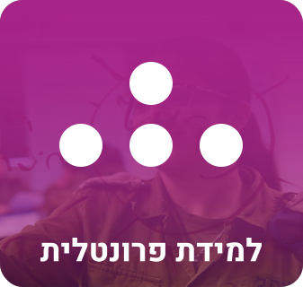
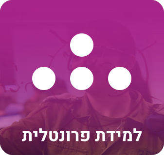

לפני הכל
פתיחה והסברים
אנשי פיתוח הדרכה יקרים!
מרחב ההדרכה בצבא עבר בשנים האחרונות
תהפוכות רבות במטרה לקצר, לייעל ולמקד את ההכשרות
כך שיהיו אפקטיביות יותר בהכשרת החניך.
על מנת להקל בתהליך פיתוח הכשרה, ובהעלאת המודעות לשיטות הרבות הקיימות, במניפה זו פירטנו שיטות למידה מגוונות הניתנות ליישום בהכשרות ומתאימות לדור הלומדים החדש.
מניפת שיטות הלמידה תפרט את העקרונות על מנת לאפשר הבנה בסיסית בכל שיטה ובאופן יישומה בתוך ההכשרה.
לכל שיטה הוספנו חומרי קריאה וכלים פרקטיים על מנת לאפשר לכם להרחיב את תהליך הלמידה עד ליישומה.
ברצוננו להודות לכל מי שסייע בריכוז השיטות ובהפקת המניפה.
פיתוח מהנה!
dtfrh
"אל תקוו שזה יהיה קל יותר. תקוו שזה יהיה טוב יותר"
(ג'ים רוהן, פילוסוף עסקים)


המשך


 
